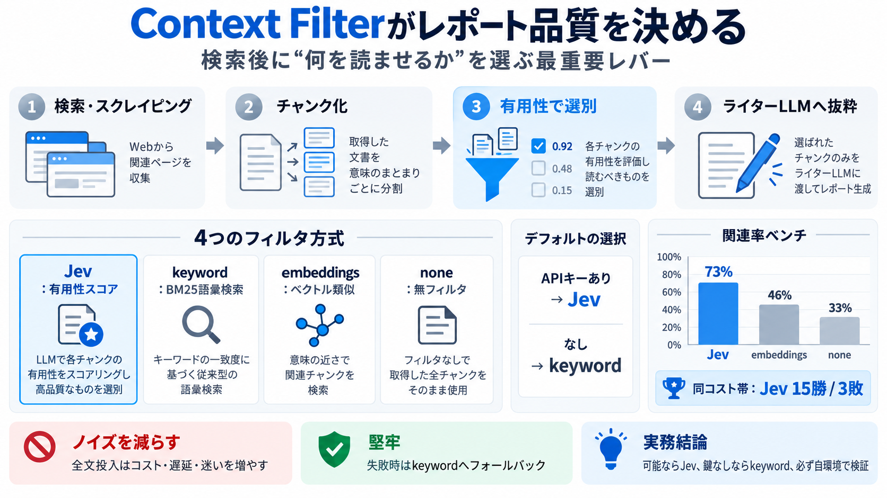

Context Filter | GPT Researcher
GPT Researcher uses Jev by TypeSafe as its default context filter. Jev scores how useful each passage is for the questio…

| 条件 | 採用フィルタ | 目的 |
|---|---|---|
| TYPESAFE_API_KEY あり | Jev | 有用性スコアで精度最大化 |
| TYPESAFE_API_KEY なし | keyword | 導入容易・低障壁 |
GPT Researcher uses Jev by TypeSafe as its default context filter. Jev scores how useful each passage is for the questio…
| Output shape | Strict structured-output modes can constrain a supported schema | Defined by the typed questions; still…
4. Cost Optimization: While GPT Researcher is cost-effective for individual use, scaling it as a service requires carefu…
### Best AI Coding Model (2026): Benchmarks, Cost, and Real World Performance Claude Fable 5, GPT-5.5, Claude Opus 4.…
Another developer named Vechen inserted Jev into an active Codex run so it could raise GPT-6 Astra’s reasoning effort wh…